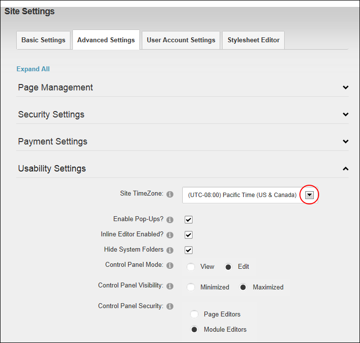

Setting the Site TimeZone
How to set the time zone for this site. This sets all time related information on this site including the default setting for the current time and date ( [DateTime:Now] ) replacement token. See "List of Replacement Tokens" for more details.
- Navigate to Admin >
 Site Settings.
Site Settings.
- Select the Advanced Settings tab.
- Expand the Usability Settings section.
- At Site TimeZone, select the time zone for the location of this site from the drop down list.

-
Click the Update button.
Tip: Users can choose their Time Zone on their profile. See "Managing your User Profile"